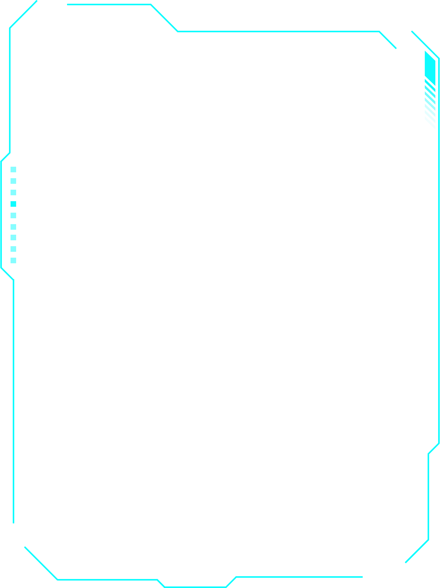
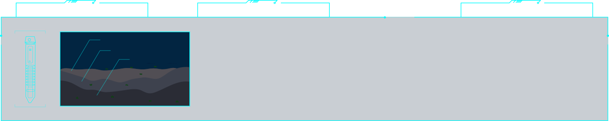
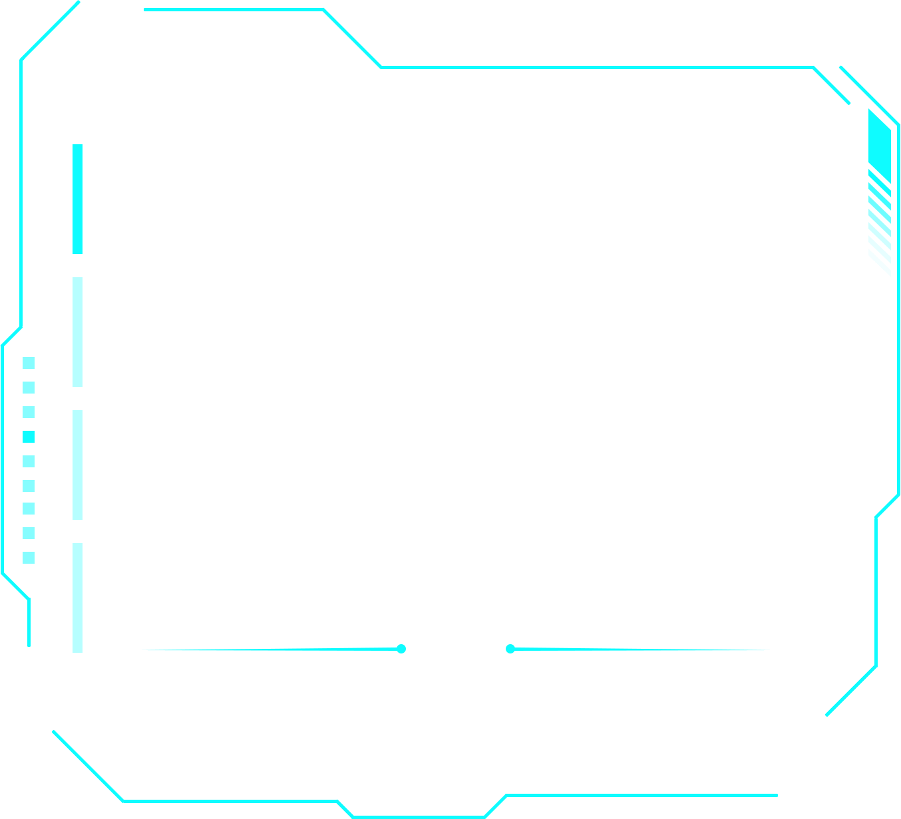
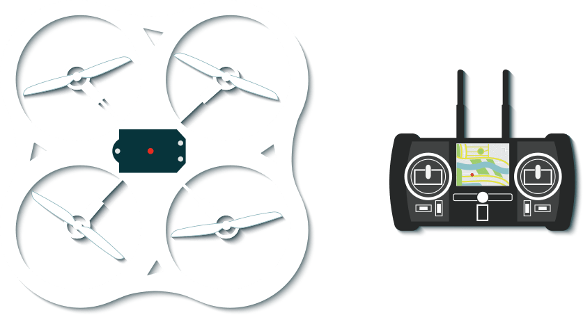
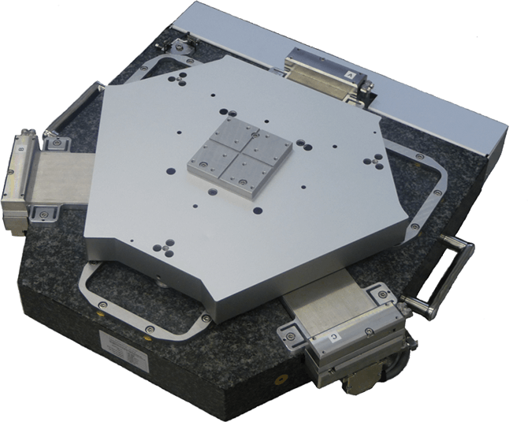
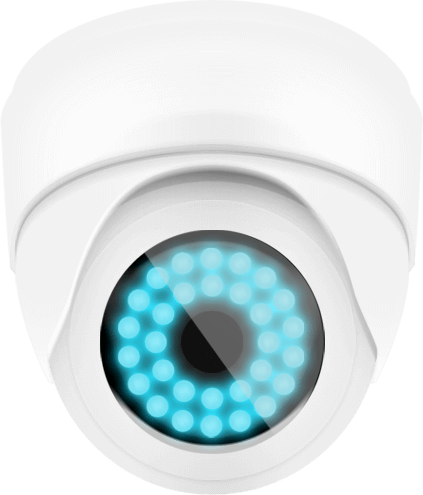
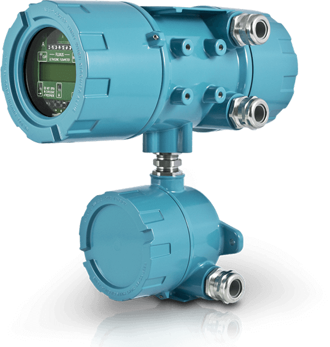
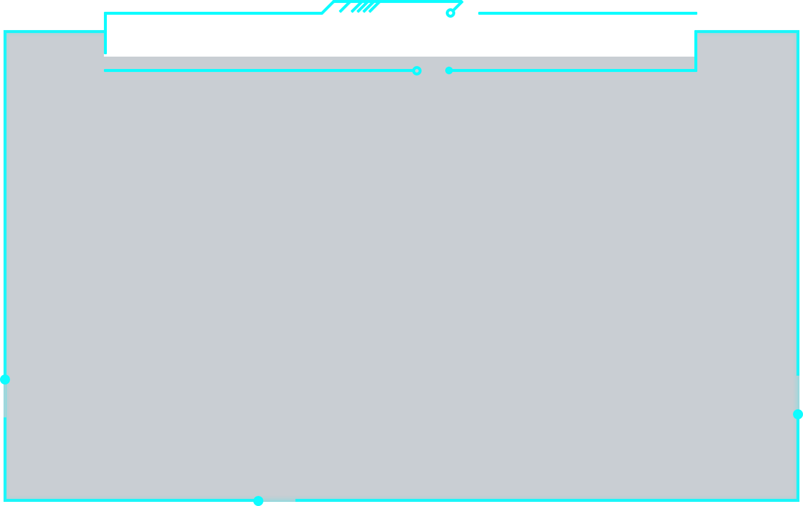

茶叶病虫害预警

沃尔玛发生火灾
仁和路发生打架斗殴
飞行率
完成度:85%

火灾处置
已自动拨通119，120，110等，现场火情已得到控制，无人员伤亡。
打架处置
已自动呼叫最近的警务室，现场打架斗殴已得到控制，有新的增援人员到达现场。

无人机飞行姿态
飞行监控
飞行区域详细数据
x 115.3224
y 32.8621
z 1200
温度：19℃
湿度：52%
风向：东南风
风速：2m/s
降雨量：0mm
蒸发量：0.326mm/h
气压：0.326MPa

硬件设备展示
- 四轴无人机
- 监控摄像头
- AI传感器
- 火情检测仪
-




介绍
源码：https://github.com/jiawanlong/Cesium-Examples

实时巡检
电池电量
80%
可飞时长（h）
3.29
覆盖范围（M�）
8725.78
巡检事件
29
覆盖小区数
230

飞行日志
| u78 | 传感器数据 | 163.28 | 2025年10月26日 |
| 006 | 无人机数据 | 130.67 | 2025年10月25日 |
| s07 | 控制器数据 | 163.28 | 2025年10月25日 |
| 872 | 监视器数据 | 130.67 | 2025年10月24日 |
| d59 | 遥感影像数据 | 163.28 | 2025年10月23日 |
| 299 | 飞行参数数据 | 130.67 | 2025年10月23日 |
| 256 | 传感器数据 | 163.28 | 2025年10月22日 |
| 026 | 无人机数据 | 130.67 | 2025年10月20日 |
| 037 | 传感器数据 | 163.28 | 2025年10月22日 |